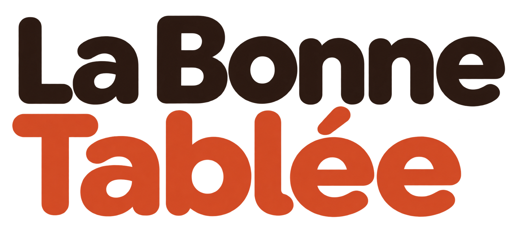

Roadmap produit
Planifier, construire,
vérifier.
La roadmap relie les intentions produit aux fonctionnalités à réaliser. Chaque user story rassemble un objectif, un niveau de priorité et des critères d’acceptation.

La roadmap relie les intentions produit aux fonctionnalités à réaliser. Chaque user story rassemble un objectif, un niveau de priorité et des critères d’acceptation.